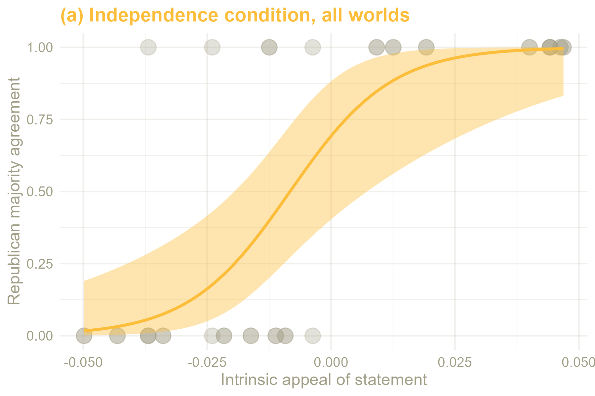
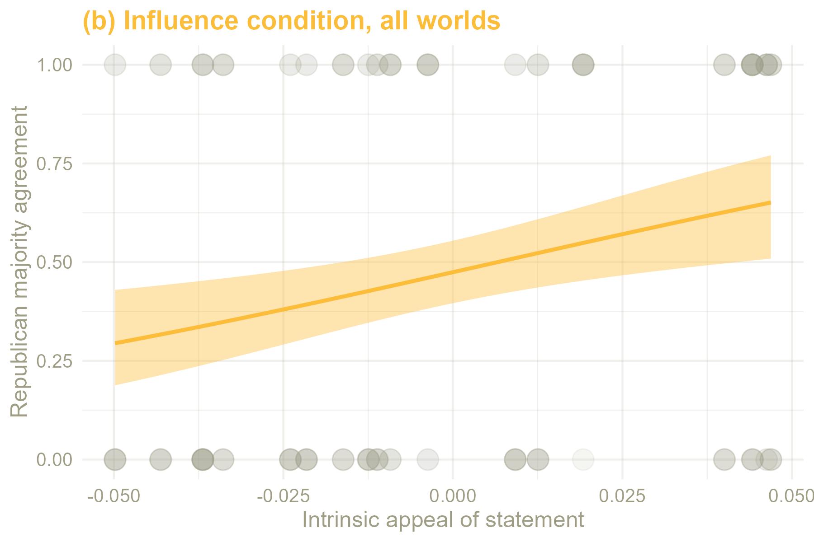
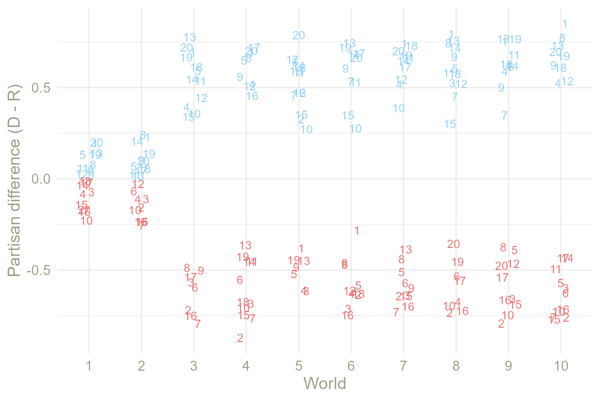

Replicating Partisan Opinion Cascades (Macy et al. 2019) via Agent-Based Modeling
Opinion Cascades
Cascade effects have been demonstrated by Salganik et al. (2006) in a unique experimental setup involving multiple worlds, i.e. experimental instances with identical initial states. Due to the enormous influence of idiosyncratic decisions made by first movers who then influenced others’ decisions, each world ended in markedly different states that were impossible to forecast accurately.
Analogously, Macy et al. (2019) used a multiple-world setup for their “Future Controversies” experiment that produced opinion cascades, an emergent effect of micro-level social influence that leads to opinion polarization outcomes which cannot be reliably predicted with knowledge about individuals’ preferences. In an online survey experiment, Macy et al. asked participants, who had reported their partisan identity on a four-point scale (strongly Republican to strongly Democrat), whether they agreed or disagreed with statements. These statements could be normative or descriptive, and had not yet been subject to public discourse which might cause pre-existing political polarization. Of a number of proposed statements, Macy et al. chose 20 which were closest to 50/50 agreement by Democrats and Republicans in pilot testing. In the experimental setup, two control groups were presented with these statements and asked to agree or disagree as a Republican or Democrat, cueing for partisan identity only. Eight treatment groups were additionally presented with accurate information about which partisan camp had agreed to the statement more often so far (Macy et al. 2019, supplementary material), cueing for identity-based social influence.
The control groups displayed stochastic variation in opinions consistent with variation found in pilot testing based on the intrinsic appeal of the statements. Differences between agreement and disagreement rates based on partisan identity were present but weak, and the direction of majorities was predictable using the intrinsic appeal measured in pilot testing. The treatment groups displayed both unpredictable majorities and higher overall polarization. Across worlds, statements would frequently flip, i.e. receive a Democrat majority in one, and a Republican majority in the other. These majorities were not tentative, either. Even statements with relatively weak appeal relative to the others in pilot testing and independence worlds produced considerable polarization in influence worlds. (Macy et al. 2019, 2ff.)
Simulation testbed and specification
Rather than attempting exact empirical calibration, I have opted for the simplest possible model that replicates the phenomenon of opinion cascades using numbers that are roughly equivalent to Macy et al. The model consists of three components: statements, agents, and task environment.
- A list of N statements is initialized (once for all worlds), each of which is assigned an intrinsic appeal αg for each party g between -1 and 1.1 For the simulation presented in this essay, I have opted for N = 20 and \(α_{g}\) in randomly sampled symmetric pairs between -0.05 and 0.05 (e.g. if intrinsic appeal is 0.05 for Republicans, it is -0.05 for Democrats) to simulate statements that elicit weak differences in partisan agreement.2
- N agents are initialized per world, each of which is assigned an in-group (i.e. party) g, an identification strength s, and a susceptibility to similarity biased influence \(β\). For this essay, N = 1000, in-group is sampled with replacement from categories “Democrats” and “Republicans” with probability 0.5 each, identification strength is sampled with replacement from categories “normal” and “strong” with probability 0.6 and 0.4 respectively. Susceptibility to influence is assigned based on group identification strength, where “strong” = 0.2, and “normal” = 0.1.3
- The environment simulates an online survey. Each statement is presented to all agents in random order before proceeding to the next statement.4 In the independence condition, only intrinsic appeal factors into an agent’s decision to agree or disagree with a statement, such that
\[p_{i,j} = 0.5 + α_{i,j,g}\]
where \(p_{i,j}\) is the probability that agent \(i\) will agree with statement \(j\), 0.5 is the prior assumption that, without any further information, the agent would be as likely to agree as to disagree, and \(α_{i,j,g}\) is the intrinsic appeal of statement \(j\) for agent \(i\)’s in-group (i.e. party) \(g\).
For the influence condition, there is a running tally which records all prior decisions made by agents. First movers calculate their decision analogous to the independence condition, subsequent agents are provided with accurate information about the current majority, which they factor into their decision based on their susceptibility to social influence, such that
\[p_{i,j} = 0.5 + α_{i,j,g} + β_{i} * m_{i,g,t}\]
where \(β_{i}\) is agent \(i\)’s susceptibility to influence, and \(m_{i,g,t}\) is the majority opinion of agent \(i\)’s in-group \(g\) at time \(t\), which is expressed as -1 (disagree) or 1 (agree).
Results
The model reproduced the two main results of Macy et al.’s experiment, unpredictability and polarization. First, while party majorities in the independence worlds were predictable with previous knowledge about each statement’s intrinsic appeal, party majorities in the influence worlds frequently flipped (see also Appendix Table 1). This is illustrated by statement 10. At 4.6% intrinsic appeal to Republicans (and symmetrically, -4.6% to Democrats), it was among the most strongly weighted statements in the set, resulting in a Republican majority in both independence worlds. In the eight influence worlds, however, majorities agreeing were tied four to four between Republicans and Democrats, demonstrating the chaotic effect of social influence on outcomes. Logistic regression further illustrates this for the entire simulation by showing that intrinsic appeal of a statement is a strong predictor in independence worlds, but significantly weakened in influence worlds:


Fig. 1. Logistic regression over pooled simulation results. (a) While intrinsic appeal is an accurate predictor for majority agreement under the independence condition, (b) opinion cascades introduced in the influence condition lessen its predictive strength considerably.
Second, polarization between respondents based on party identity, calculated as the proportion of Democrats agreeing to a statement minus the proportion of Republicans agreeing (Macy et al. 2019, 3), is much more pronounced in the influence condition.

Fig. 2. Partisan difference. Polarization is minimal in independence worlds (1 and 2), whereas influence worlds consistently show greater polarization.
Statement 10 again illustrates the interplay between intrinsic appeal and social influence. While it is close to the maximum of 5% intrinsic appeal specified in the sampling process for this simulation run, it is not enough to override an opinion cascade already underway. However, the statement is among the least popular for Democrats in worlds 3, 5, 6, and 7, where it achieved a Democrat majority, and among the most popular for Republicans in worlds 4, 8, 9, and 10, where it achieved a Republican majority. Thus, even at this low level, intrinsic appeal can be assumed to have a marked effect on the extent of polarization.
Discussion and Conclusion
This simulation was an exercise in simplicity, constructing a minimal proposal ‘from first principles’. In hindsight, the model architecture lacks flexibility in the independence condition: agents with certain characteristics may be more susceptible to an item’s intrinsic appeal - simulating, for example, reactions to variations in wording that activate different moral intuitions of respondents (Keijzer et al. 2024, 3.14). Future iterations of this model should include this possibility.
Furthermore, the original experimental design by Macy et al. may have implicitly mixed effects of “similarity biased influence” and “repulsive influence” (Flache et al. 2017) (or “alignment” and “distancing” (Keijzer et al. 2024, 3.11ff.)) by supplying respondents with information about both their own and the opposing party’s running tally (Macy et al. 2019, supplementary material). My model is built to represent similarity biased influence only; therefore, should these effects have separate strengths in this setup, it would have to be amended.
To contribute to a unified theory of social influence rather than adding to “the accumulation of social-influence models” (Flache et al. 2017, 3.2), ABMs should conform to standards of model and code architecture (Flache et al. 2017, 3.7) and documentation agreed upon by the wider research community, such that integration into an existing framework is possible with minimal alterations. Future iterations of this model should take these standards into consideration and aim for maximum compatibility with the existing literature.
Despite its weaknesses, there is ample opportunity for further simulations using this model or variations of it. Most obviously, simulating different combinations of number of first movers, intrinsic appeal, and social influence would ascertain their relative and combined effects and might indicate tipping points where the strength of one rapidly overtakes the others. To simulate a multi-party system, one may add groups to the simulation and possibly make agents’ identification continuous to reflect weak and distributed party loyalty displayed by voters in such systems. One may also add categories to statements and assign weighting scores for each to agents, simulating individual affinity to thematic clusters such as ‘environment’ or ‘abortion’.
Further simulations should aim to move toward ecologically valid micro-assumptions and ecologically relevant network structures. To this end, the robustness of opinion cascades needs to be tested in more complex conditions, including network structures with multiple interactions and bi-directional links as well as different weights of agents’ influence. Hypotheses generated by these models must then be tested with human subjects.
References
Footnotes
This architecture allows for an arbitrary number of groups with individual affinities for each statement, potentially enabling the simulation of opinion cascades in a multi-party system.↩︎
See Appendix Table 1 for a list of statements and intrinsic appeals used for the simulation.↩︎
Using this architecture, it would also be possible to sample individual susceptibilities for each agent, simulating, for example, differences in character traits.↩︎
Presenting statements to each respondent in random order is necessary in human experiments to prevent question order effects, but unnecessary in simulations.↩︎